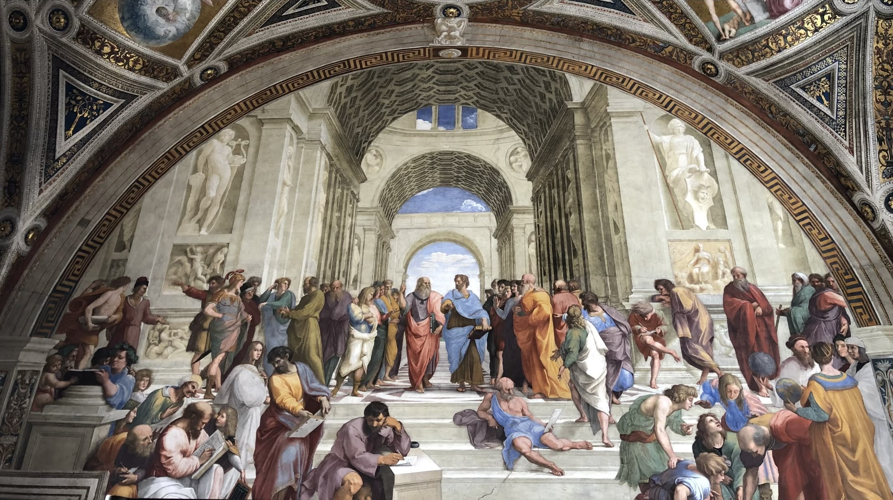

The Paper Tree


| Title | Author | Category | Type |
|---|---|---|---|
| 2 STATES | CHETAN BHAGAT | FICTION | PAPERBACK |
| 12 RULES FOR LIFE | JORDAN B PETERSON | NON-FICTION | PAPERBACK |
| 1984 | GEORGE ORWELL | FICTION | PAPERBACK |
| A MAN CALLED OVE | FREDRICK BACKMAN | FICTION | PAPERBACK |
| ALL ROADS TO LEADS TO GANGA | RUSKIN BOND | NON-FICTION | PAPERBACK |
| AND THEN THERE WERE NONE | AGATHA CHRISTIE | FICTION | PAPERBACK |
| ANGELS AND DEMONS | DAN BROWN | FICTION | PAPERBACK |
| ATOMIC HABITS | JAMES CLEAR | NON-FICTION | PAPERBACK |
| AUTOBIOGRAPHY OF AN YOGI | PARAMHANSA YOGANANDA | NON-FICTION | PAPERBACK |
| BEHOLD THE LEVIATHAN | NANDITA RAJHANSA, SAURABH MUKHERJEA | NON-FICTION | HARDBOUND |
| BELIEVER'S DILEMMA | ABHISHEK CHOUDHARY | NON-FICTION | HARDBOUND |
| BETWEEN THE ASSASSINATIONS | ARAVIND ADIGA | FICTION | PAPERBACK |
| BEYOND 2020 | ABDUL KALAM | NON-FICTION | HARDBOUND |
| CLOSED CASKET | SOPHIE HANNAH | FICTION | PAPERBACK |
| COFFEE CAN INVESTING | PRANAB UNIYAL, RAKSHIT RANJAN, SAURABH MUKHERJEA | NON-FICTION | HARDBOUND |
| CRACKING THE CODE | AYUSHMANN KHURRANA, TAHIRA KASHYAP | NON-FICTION | PAPERBACK |
| DEATH | SADHGURU | NON-FICTION | PAPERBACK |
| DECEPTION POINT | DAN BROWN | FICTION | PAPERBACK |
| DIAMONDS ARE FOREVER, SO ARE MORALS | ARUN TIWARI, GOVID DHOLAKIA, KAMLESH YAGNIK | NON-FICTION | HARDBOUND |
| DIAMONDS IN THE DUST | RAKSHIT RANJAN, SALIL DESAI, SAURABH MUKHERJEA | NON-FICTION | HARDBOUND |
| DIGITAL FORTRESS | DAN BROWN | FICTION | PAPERBACK |
| EDUCATED | TARA WESTOVER | NON-FICTION | PAPERBACK |
| ELON MUSK | ASHLEE VANCE, ELON MUSK | NON-FICTION | PAPERBACK |
| ENERGIZE YOUR MIND | GAUR GOPAL DAS | NON-FICTION | PAPERBACK |
| EVERYTHING I KNOW ABOUT LOVE | DOLLY ALDERTON | NON-FICTION | PAPERBACK |
| FIVE POINT SOMEONE | CHETAN BHAGAT | FICTION | PAPERBACK |
| FLAWED PROPHETS | TIRTHAK SAHA | NON-FICTION | PAPERBACK |
| GHOSTS | DOLLY ALDERTON | FICTION | PAPERBACK |
| GLIMPSES OF WORLD HISTORY | JAWAHARLAL NEHRU | NON-FICTION | PAPERBACK |
| GOOD MATERIAL | DOLLY ALDERTON | FICTION | PAPERBACK |
| GRIT | ANGELA DUCKWORTH | NON-FICTION | PAPERBACK |
| HALF GIRLFRIEND | CHETAN BHAGAT | FICTION | PAPERBACK |
| HINDUS IN HINDU RASHTRA | ANAND RANGANATHAN | NON-FICTION | HARDBOUND |
| I CAME UPON A LIGHTHOUSE | SHANTANU NAIDU | NON-FICTION | HARDBOUND |
| IN OTHER WORDS | JHUMPA LAHIRI | NON-FICTION | PAPERBACK |
| INDIA DIVIDED | DR. RAJENDRA PRASAD | NON-FICTION | PAPERBACK |
| INDISTRACTABLE | NIR EYAL | NON-FICTION | PAPERBACK |
| INFERNO | DAN BROWN | FICTION | PAPERBACK |
| INTERPRETER OF MALADIES | JHUMPA LAHIRI | FICTION | PAPERBACK |
| JUST KEEP BUYING | NICK MAGGIULLI | NON-FICTION | PAPERBACK |
| JUSTICE FOR THE JUDGE | RANJAN GOGOI | NON-FICTION | HARDBOUND |
| LEARN, DON'T STUDY | PRAMATH RAJ SINHA | NON-FICTION | HARDBOUND |
| LIFE OF PI | YANN MARTEL | FICTION | PAPERBACK |
| LIFE'S AMAZING SECRET | GAUR GOPAL DAS | NON-FICTION | PAPERBACK |
| MOBY DICK - ABRIDGED | HERMAN MELVILLE | FICTION | PAPERBACK |
| MURDER IN THE CITY | SUPRATIM SARKAR | NON-FICTION | PAPERBACK |
| MY EXPERIMENTS WITH TRUTH | MAHATMA GANDHI | NON-FICTION | PAPERBACK |
| OLIVER TWIST | CHARLES DICKENS | FICTION | PAPERBACK |
| ONE ARRANGED MURDER | CHETAN BHAGAT | FICTION | PAPERBACK |
| ONE INDIAN GIRL | CHETAN BHAGAT | FICTION | PAPERBACK |
| ONE NIGHT @ THE CALL CENTRE | CHETAN BHAGAT | FICTION | PAPERBACK |
| ORIGIN | DAN BROWN | FICTION | PAPERBACK |
| OVERLOAD | ARTHUR HAILEY | FICTION | PAPERBACK |
| PRIDE AND PREJUDICE | JANE AUSTEN | FICTION | PAPERBACK |
| REVOLUTION TWENTY20 | CHETAN BHAGAT | FICTION | PAPERBACK |
| ROADS TO MUSSOORIE | RUSKIN BOND | NON-FICTION | PAPERBACK |
| ROMAN STORIES | JHUMPA LAHIRI | FICTION | HARDBOUND |
| SACH KAHUN TOH | NEENA GUPTA | NON-FICTION | HARDBOUND |
| SAME AS EVER | MORGAN HOUSEL | NON-FICTION | HARDBOUND |
| SELECTION DAY | ARAVIND ADIGA | FICTION | PAPERBACK |
| SING, DANCE AND PRAY | HINDOL SENGUPTA | NON-FICTION | HARDBOUND |
| STEVE JOBS | WALTER ISAACSON | NON-FICTION | PAPERBACK |
| TATA'S LEADERSHIP EXPERIMENT | BHARAT WAKHLU, MUKUND RAJAN, SONU BHASIN | NON-FICTION | HARDBOUND |
| THE ALCHEMIST | PAULO COELHO | FICTION | PAPERBACK |
| THE ART OF SPENDING MONEY | MORGAN HOUSEL | NON-FICTION | HARDBOUND |
| THE BEST OF O HENRY | O HENRY/ H H MUNRO | FICTION | PAPERBACK |
| THE BOOK THIEF | MARKUS ZUSAK | FICTION | PAPERBACK |
| THE CLOTHING OF BOOKS | JHUMPA LAHIRI | NON-FICTION | HARDBOUND |
| THE COURAGE TO BE DISLIKED | FUMITAKE KOGA, ICHIRO KISHIMI | NON-FICTION | HARDBOUND |
| THE COURAGE TO BE HAPPY | FUMITAKE KOGA, ICHIRO KISHIMI | NON-FICTION | HARDBOUND |
| THE DA VINCI CODE | DAN BROWN | FICTION | PAPERBACK |
| THE GALLERY | MANJU KAPUR | FICTION | HARDBOUND |
| THE GIRL IN ROOM 105 | CHETAN BHAGAT | FICTION | PAPERBACK |
| THE GIRL ON THE TRAIN | PAULA HAWKINS | FICTION | PAPERBACK |
| THE GIRL WHO KNEW TOO MUCH | VIKRANT KHANNA | FICTION | PAPERBACK |
| THE GONE GIRL | GILLIAN FLYNN | FICTION | PAPERBACK |
| THE GUEST LIST | LUCY FOLEY | FICTION | PAPERBACK |
| THE HACKER | STANLEY MOSS | FICTION | PAPERBACK |
| THE HUNGRY TIDE | AMITAV GHOSH | FICTION | PAPERBACK |
| THE INDIA I LOVE | RUSKIN BOND | NON-FICTION | PAPERBACK |
| THE INNOVATORS | WALTER ISAACSON | NON-FICTION | PAPERBACK |
| THE INVISIBLE MAN | H G WELLS | FICTION | PAPERBACK |
| THE LOST SYMBOL | DAN BROWN | FICTION | PAPERBACK |
| THE LOWLAND | JHUMPA LAHIRI | FICTION | PAPERBACK |
| THE MIDNIGHT LIBRARY | MATT HAIG | FICTION | PAPERBACK |
| THE MONOGRAM MURDERS | SOPHIE HANNAH | FICTION | PAPERBACK |
| THE MURDER OF ROGER ACROYD | AGATHA CHRISTIE | FICTION | PAPERBACK |
| THE NAMESAKE | JHUMPA LAHIRI | FICTION | PAPERBACK |
| THE OLD MAN AND THE SEA | ERNEST HEMINGWAY | FICTION | PAPERBACK |
| THE OWL DELIVERED THE GOOD NEWS ALL NIGHT LONG | LOPAMUDRA MAITRA BAJPAI | FICTION | HARDBOUND |
| THE PICTURE OF DORIAN GRAY | OSCAR WILDE | FICTION | PAPERBACK |
| THE POWER OF YOUR SUBCONSCIOUS MIND | JOSEPH MURPHY | NON-FICTION | PAPERBACK |
| THE PSYCHOLOGY OF MONEY | MORGAN HOUSEL | NON-FICTION | HARDBOUND |
| THE RATIONAL OPTIMIST | MATT RIDLEY | NON-FICTION | PAPERBACK |
| THE SECRET HISTORY | DONNA TART | FICTION | PAPERBACK |
| THE SECRET OF SECRETS | DAN BROWN | FICTION | HARDBOUND |
| THE STARNGER IN THE LIFEBOAT | MITCH ALBOM | NON-FICTION | PAPERBACK |
| THE STORY OF TATA: 1968 TO 2021 | PETER CASEY | NON-FICTION | HARDBOUND |
| THE SUBTLE ART OF NOT GIVING A FUCK | MARK MANSON | NON-FICTION | PAPERBACK |
| THE TANISHQ STORY | C K VENKATARAMAN | NON-FICTION | HARDBOUND |
| THE THREE MISTAKE OF MY LIFE | CHETAN BHAGAT | FICTION | PAPERBACK |
| THE WEALTH LADDER | NICK MAGGIULLI | NON-FICTION | PAPERBACK |
| THE WHITE TIGER | ARAVIND ADIGA | FICTION | PAPERBACK |
| THINK LIKE A MONK | JAY SHETTY | NON-FICTION | PAPERBACK |
| THINKING FAST AND SLOW | DANIEL KAHNEMAN | NON-FICTION | PAPERBACK |
| TRANSLATING MYSELF AND OTHERS | JHUMPA LAHIRI | NON-FICTION | HARDBOUND |
| TRAVELLING IN, TRAVELLING OUT | NAMITA GOKHALE | FICTION | HARDBOUND |
| TUESDAYS WITH MORRIE | MITCH ALBOM | NON-FICTION | PAPERBACK |
| UNACCUSTOMED EARTH | JHUMPA LAHIRI | FICTION | PAPERBACK |
| UNFINISHED | PRIYANKA CHOPRA JONAS | NON-FICTION | HARDBOUND |
| VAJPAYEE: THE ASCENT OF HINDU RIGHTS | ABHISHEK CHOUDHARY | NON-FICTION | HARDBOUND |
| WHEN BREATHE BECOMES AIR | PAUL KALANITHI | NON-FICTION | HARDBOUND |
| WHERE THE CRAWDADS SING | DELIA OWENS | FICTION | PAPERBACK |
| WHEREABOUTS | JHUMPA LAHIRI | FICTION | HARDBOUND |
| WHO WILL CRY WHEN YOU WILL DIE? | ROBIN SHARMA | NON-FICTION | PAPERBACK |
| WINGS OF FIRE | ABDUL KALAM, ARUN TIWARI | NON-FICTION | PAPERBACK |
| WUTHERING HEIGHTS | EMILY BRONTE | FICTION | PAPERBACK |
| YOU MUST BE KIDDING DR. SUPRATIC GUPTA | PRAKASH CHANDRA, SUPRATIK GUPTA | NON-FICTION | PAPERBACK |
| ভুল বাড়িতে ডুকে | সমরেশ বসু | FICTION | HARDBOUND |
| মানিকাঞ্চন | মানিলাল ভৌমিক | NON-FICTION | HARDBOUND |
| শিমূলগড়ের খুনে ভূত | সমরেশ বসু | FICTION | HARDBOUND |